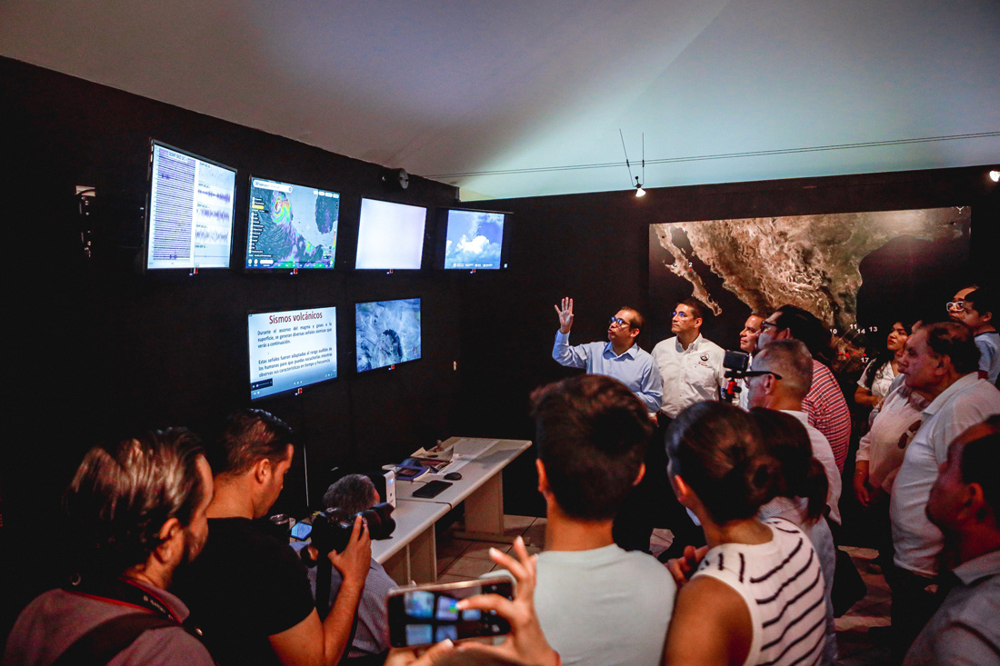

En la Casa del Volcán, puedes descubrir información única sobre el Volcán de Colima. Desde su monitoreo en tiempo real hasta la historia detrás de este majestuoso lugar.
La Casa del Volcán

Historia
La Casa del Volcán fue creada como un centro para la educación, investigación y divulgación sobre el Volcán de Colima. Desde sus inicios, ha sido un lugar clave para el aprendizaje y la interacción con la naturaleza y la ciencia.